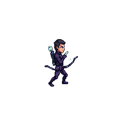
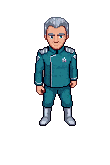
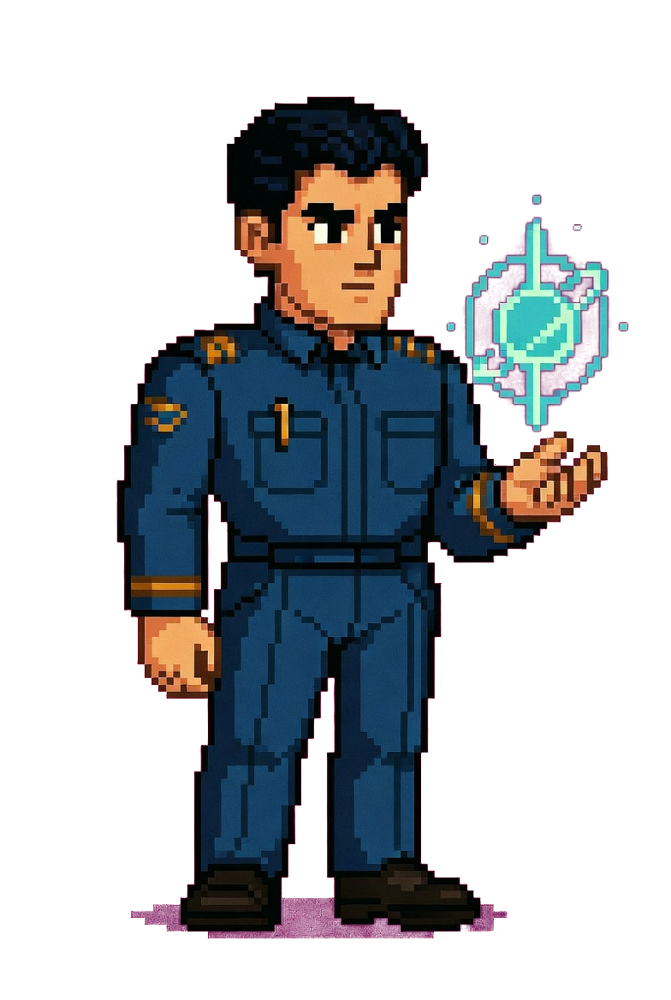
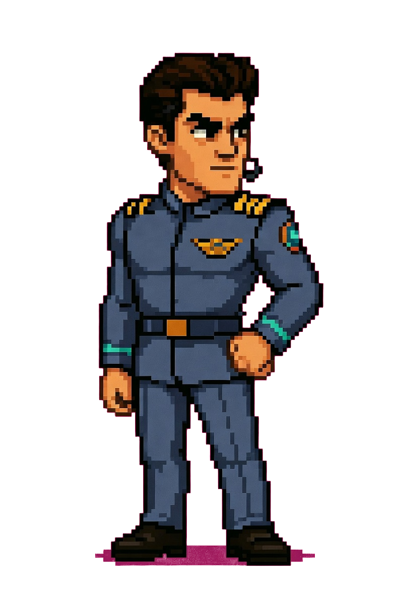
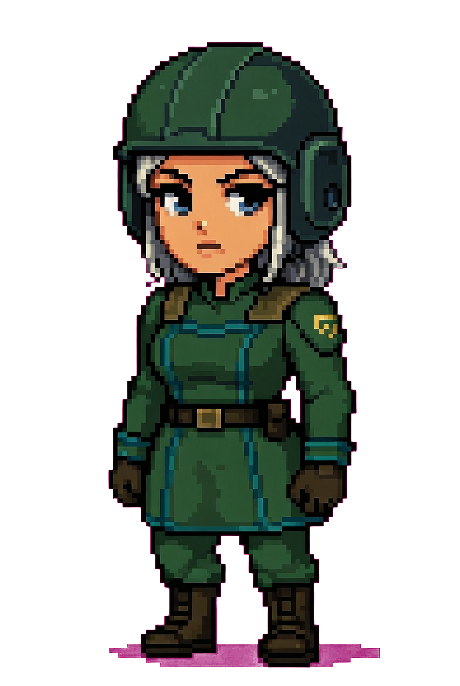
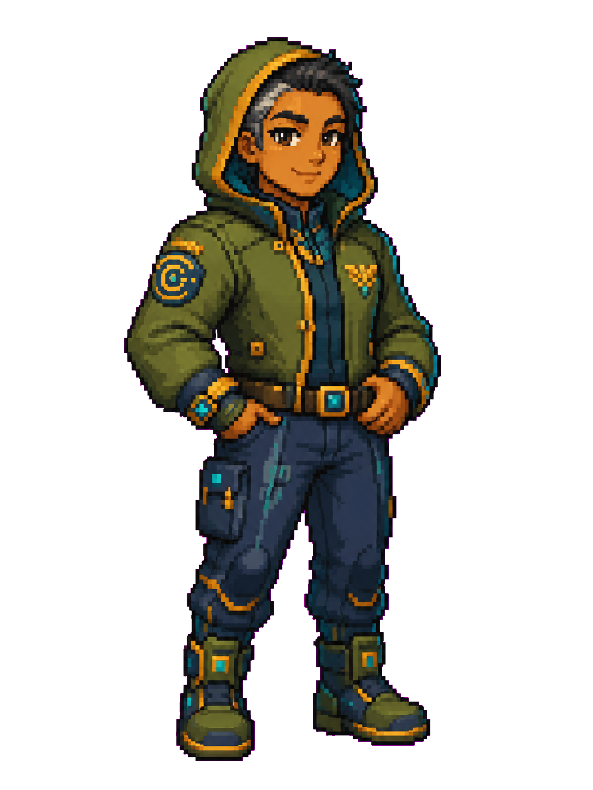

Nine roles. Twenty-seven crew.
Load as many more as you want.
Not avatars. Not "personas." Real workers with a job each, on deck the moment you boot — and they hand off to each other so you never babysit a queue. Nine roles, three world-variations apiece: twenty-seven crew ready in beta. Want more? Load any agent as plain markdown and it clocks in with the rest.
The whole crew, one conversation, zero ticket-juggling.
Watch the crew pass one job down the line — no ticket-juggling, no copy-paste. You just watch it happen. (The raw log runs on the left; here's what it means in plain English on the right.)
- You asked for one thing — in plain words, once.
- Architect split it into three safe lanes and assigned the right workers.
- Foreman built it and opened a pull request — with the diff as proof.
- Guardian checked the work: 12 checks passed, one question left for you.
- All you do is answer that one question. No tickets, no chasing.

Meet the workers every crew starts with.
Your assistant.

The friendly face who runs the room. Knows the codebase, talks like a friend, and is the first voice you hear when the hub boots: "Hello, Dearien. The crew is on deck." Pops keeps the room warm — and keeps receipts. Every command you spoke and every file the crew touched lands in the ship's log, so nothing gets ghosted.
Plans. Verifies.

The one who turns "I want X" into a real plan. Architect breaks a goal into lanes, checks the work against the shape you asked for, and says no when the shape is wrong. It drafts the plan in your words first, then into ticketable tasks — and the plan is editable, so you argue with it before the build starts, not after.
Builds. Ships PRs.

Your heads-down builder. Does the work and reports back with proof — a diff, a passing test, a screenshot — and drags the cards across your board as it goes. Foreman runs in its own lane, never on the same file as another worker, so two of them building at once never wreck each other. Each role is fenced →
Reviews. Bounces.

The one who catches problems before they land. Guardian blocks sloppy changes with a reason — always specific, never vibes — reading every diff against your goal, against Architect's gate, and against the safety rules. Three checks before anything merges, and it reviews only: it never builds its own work. Why that matters →
Generates media.
Your media hand. Runs video, image, and audio jobs while you sleep — drop a brief, walk away, come back to a folder full of takes. Spark queues the long renders through the autoloop and surfaces previews as each one finishes, so you're never babysitting a progress bar.
Pulls tools.

The crew's lookup desk. Wizard finds the right tool, installs it, and wires vetted business skills into the agent that needs them — /triage-nda, /vendor-check, /compliance-check. It remembers which tool got the last job done and offers it again next time, so the kit learns the shape of your work.
Every worker is fenced to its job.
Each role ships with its own tools and permissions — and only those. Your design agent has design tools and literally can't delete your work or merge a pull request. Your builder can't approve its own code. Guardian reviews, but never builds. Nobody can do another role's job — so two agents working at once never wreck each other, and nothing gets merged behind your back.
Per-role MCP + tool-call gates, scoped at the role level.
Edits designs & builds UI
Can't delete your files or merge
Writes code, opens PRs
Can't approve its own work
Reviews & blocks with a reason
Can't build or merge unreviewed code